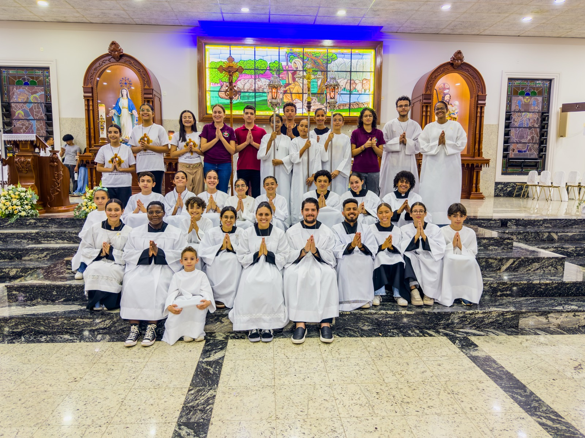
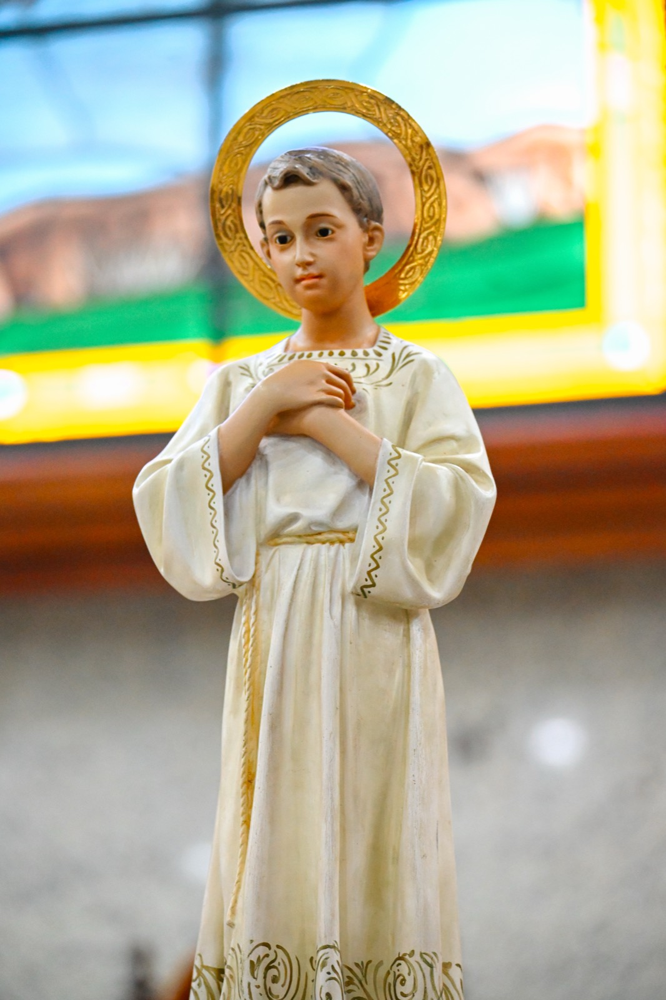
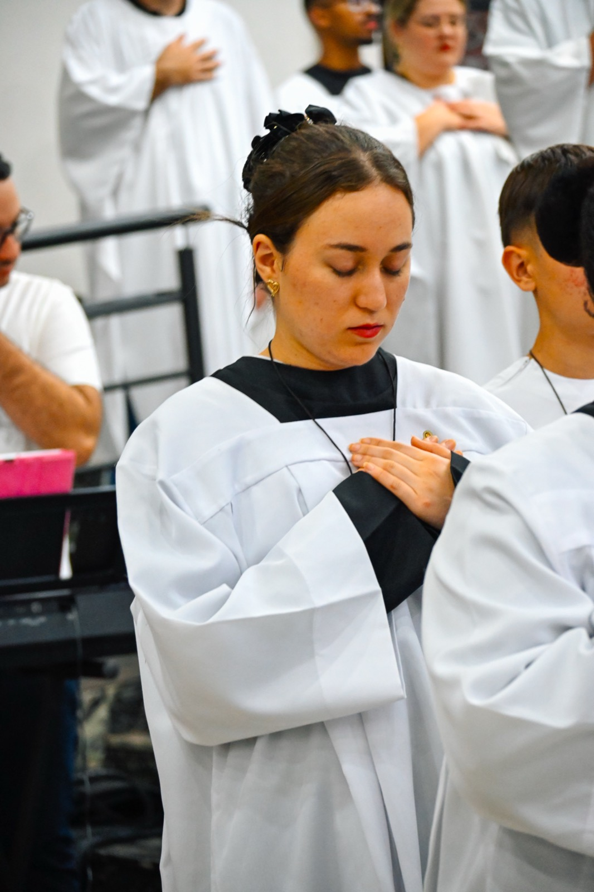
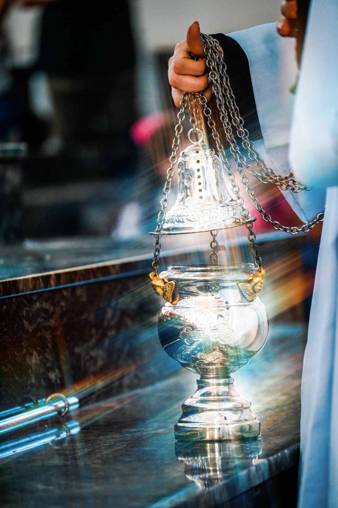
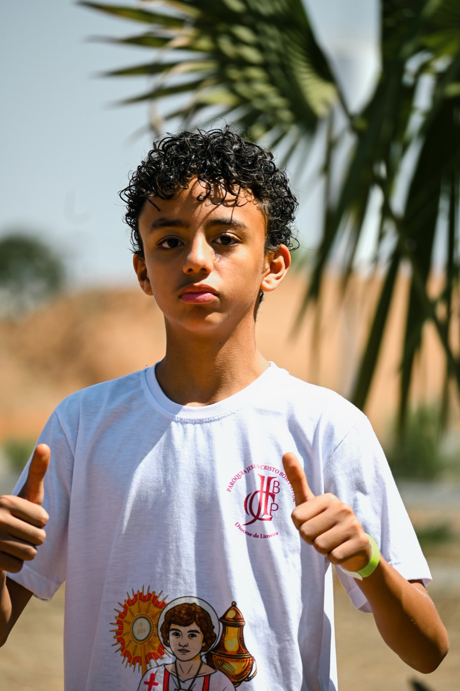
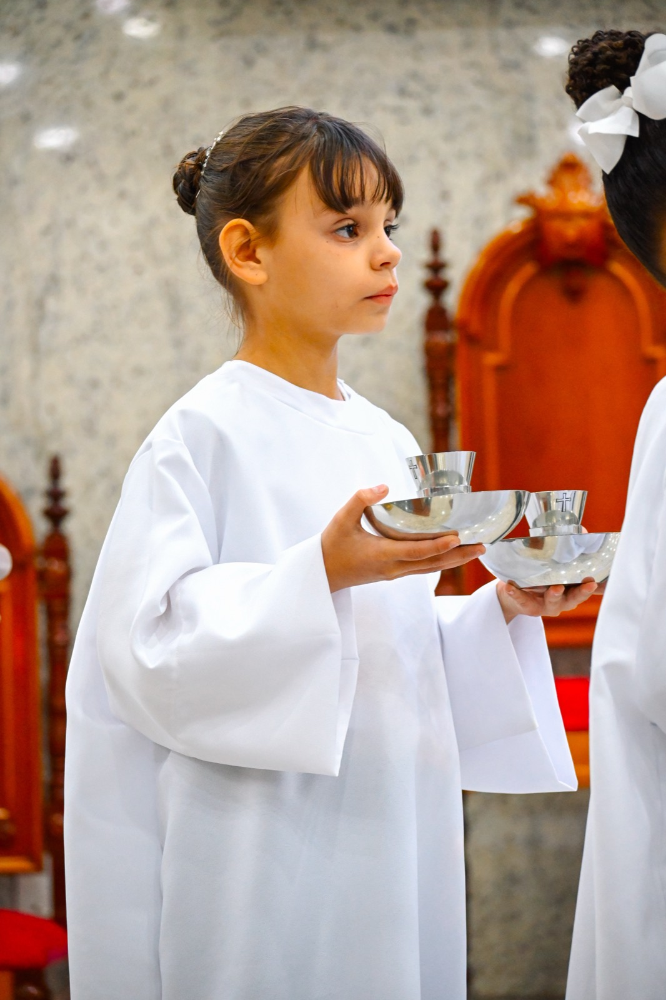
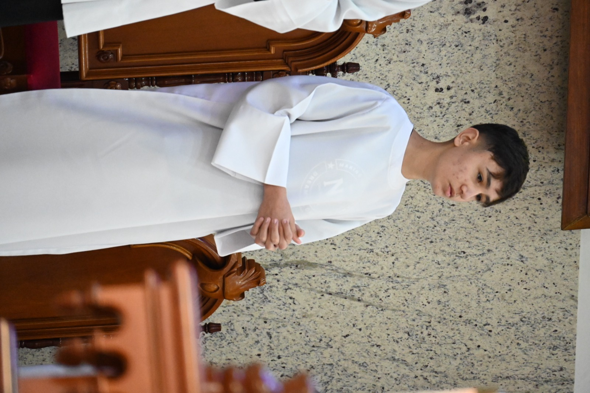
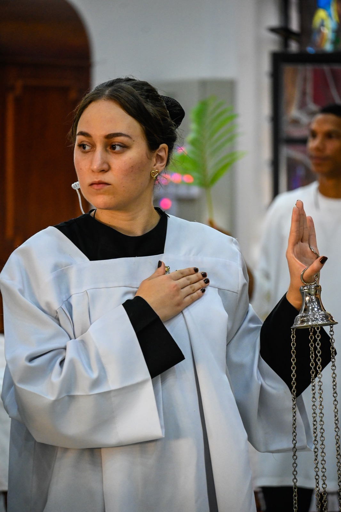
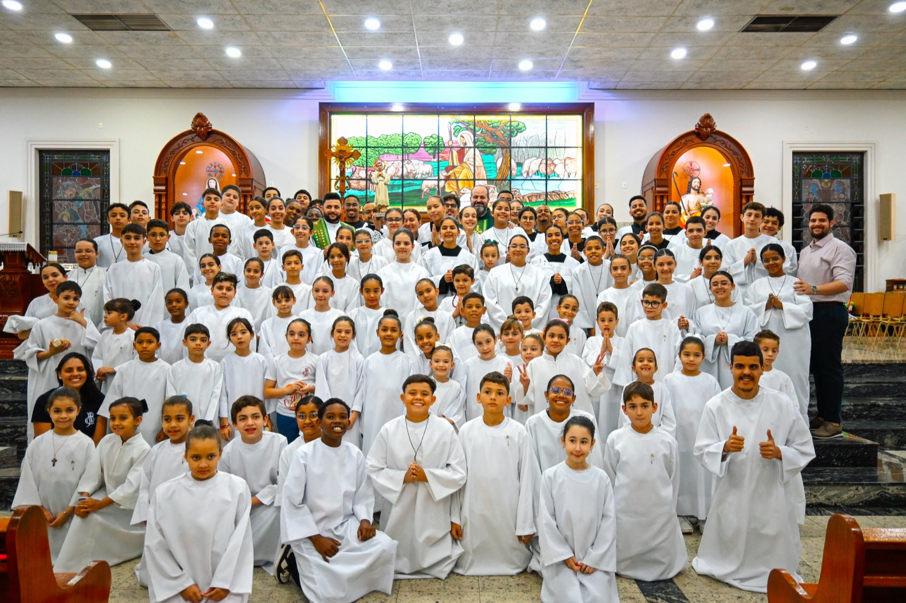

Somos do Altar
Ao serviço do altar, sou inteiro
Pastoral dos Coroinhas e Acólitos
❧

Ao serviço do altar, sou inteiro
Pastoral dos Coroinhas e Acólitos

O jovem que abraçou Jesus até o fim.
Tarcísio era um jovem como você. Lá no ano 257, em Roma, ele levava escondida a Eucaristia para os cristãos que estavam presos. Um dia foi cercado por um grupo que queria profanar o Santíssimo, e ele simplesmente não entregou. Abraçou Jesus contra o peito e deu a própria vida sem soltar o que era sagrado.
É por isso que ele é o padroeiro dos coroinhas e acólitos. Toda vez que a gente serve ao altar, é o exemplo dele que segue vivo: guardar o sagrado de coração inteiro.
Onde o tempo se aquieta e o coração aprende a adorar.
Servir à Mesa do Senhor é o jeito mais bonito de dizer “sim” pra Deus. Cada vela que você acende, cada sino que toca, cada passo na procissão vira uma oração feita com o corpo inteiro. São gestos pequenos que tocam o Céu. Aqui você não só assiste à missa, você se deixa transformar por ela.
“Eis-me aqui, envia-me.”Isaías 6, 8


“Entrarei junto ao altar de Deus,
do Deus que é a alegria da minha juventude.”
Ninguém começa pronto, e ninguém serve sozinho. A vida no altar é uma caminhada de degraus, cada um com a sua beleza e a sua missão. Olha só por onde ela passa.

Aspirante
Você chega, observa e se encanta. Aprende os primeiros gestos, faz novos amigos e descobre como é bom estar pertinho do altar. É aqui que tudo começa.
Coroinha
Agora você veste a túnica, conduz a luz, toca o sino e acompanha o padre. Você deixou de assistir à missa pra servir nela, de corpo e alma.


Acólito
A responsabilidade junto ao altar cresce com você. A formação fica mais profunda, a oração mais firme, e cada detalhe da liturgia passa a importar. Servir vira entrega de verdade.
Cerimoniário
Você já tem traquejo: coordena a equipe, ensina os mais novos e cuida pra que cada celebração fique linda. Aqui servir também é ajudar os outros a servir.

A caminhada não para quando a missa acaba. Durante a semana ela continua na palma da sua mão. O app transforma o serviço numa aventura espiritual, cheia de metas, conquistas e uma turma que cresce junto.
Somos do Altar🔔Encontros, brincadeiras, partilha e oração. A gente reza junto, ri junto e cresce unido no mesmo amor.

“Ao serviço do altar, sou inteiro.”
Lema da nossa pastoralEntrar na pastoral é fácil. Veja como dar o seu primeiro passo hoje mesmo.
Toque em “Quero servir” e crie sua conta em poucos segundos.
Preencha seus dados no app. Se você for menor, os pais dão uma mãozinha.
A coordenação dá uma olhada no seu cadastro e logo entra em contato.
Venha aos encontros e dê seus primeiros passos juntinho do altar.
As portas estão sempre abertas. Apareça numa das nossas celebrações e, se sentir o chamado, fica com a gente.
Dá o primeiro passo. Crie seu acesso, chama a gente no WhatsApp ou venha nos conhecer. O altar está te esperando.